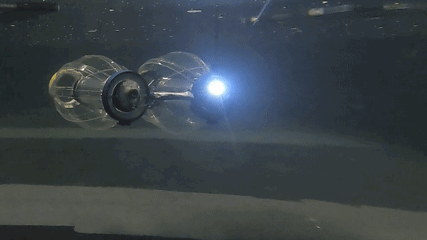
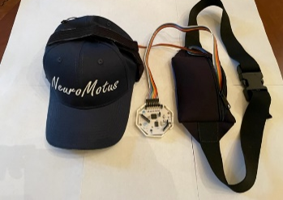
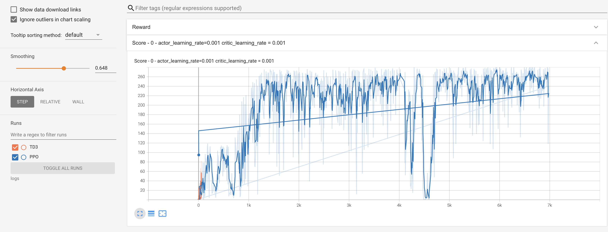

Founding Researcher, Human Archive · AI & Applied Mathematics, University of Pennsylvania
I build intelligent systems at the intersection of robotics and artificial intelligence. I am a founding researcher at Human Archive, where I lead egocentric perception research: stereo-inertial SLAM, 3D hand tracking, and human-video pretraining for dexterous robot manipulation. Previously I was a researcher at the GRASP Lab at Penn, advised by Prof. Cynthia Sung, working on optical tactile sensing and reinforcement learning for underwater soft robots.
Stereo-inertial SLAM for egocentric head motion, built for labelling large-scale human video. Accurate to half a centimetre and tracks nearly every frame, where established systems lose track or drift.
3D egocentric hand tracking built on a custom ViT-H stereo transformer, validated against motion capture and run at fleet scale to label Human Archive’s datasets for leading AI labs.
Does egocentric human video make robots more dexterous? We pretrained the VITRA VLA (PaliGemma-2 3B + DiT action head) on 100 h of our egocentric video and compared it against two EgoVerse datasets and a model with no human-video pretraining.
Teaching a soft underwater robot to feel using only a camera. We print a dense fractal maze pattern on a transparent elastomer skin (225 × 30 mm), mount a fisheye camera inside, and train a spatiotemporal encoder-decoder to infer contact location, indentation depth, normal force, and surface wave propagation at 30 fps — no force sensors at inference.

Developing RL control policies for the SLAP robot — a biologically-inspired soft limbless aquatic propulsor. MDP reward shaping for forward locomotion and turning, alongside DenseTact Mini 2 optical tactile sensor integration for environmental feedback and CNN-based underwater localization.

Intent-based movement prediction using EEG signals to expand exoskeleton capabilities for Cerebral Palsy patients beyond basic walking. Decodes Bereitschaftspotential signals with a custom CNN and drives a ROS-controlled limb simulator via a bidirectional neurofeedback loop.

DDPG actor-critic reinforcement learning system for robotic door manipulation in the RoboSuite simulation environment. Achieved near-perfect task success through reward shaping and exploration noise scheduling.
Wearable triboelectric nanogenerator sensor and ML pipeline for quantifying muscle spasticity in children with Cerebral Palsy. Converts microscopic muscle deformation into electrical signals; a 1D convolutional autoencoder computes a Calculated Muscle Spasticity Score (cMSS) across three leg muscle groups.